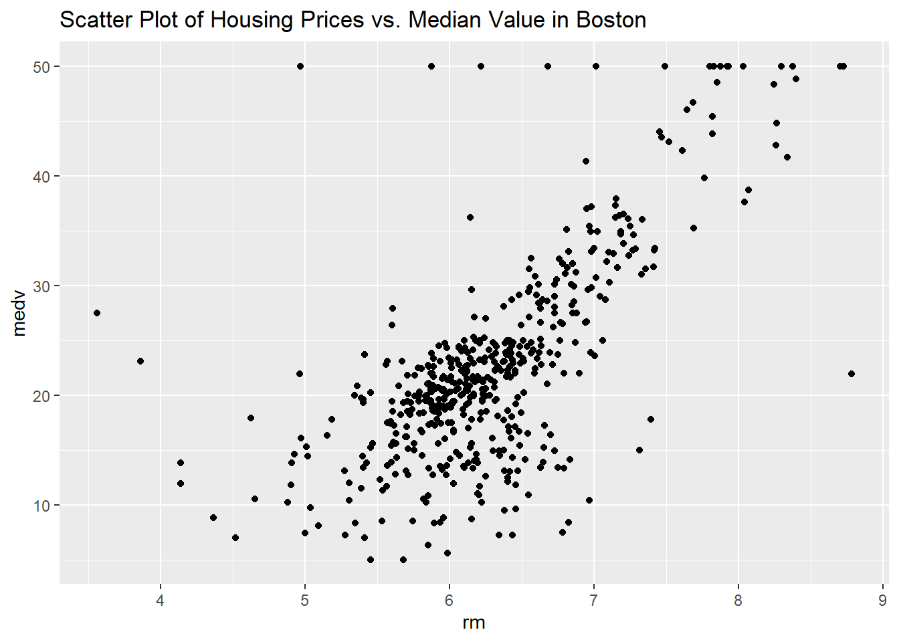

I can say that the estimated median value of owner-occupied houses is 41.62 when all predictors are zero because the intercept is statistically significant.
Here, R squared is 0.7343 that means the model shows about 73.43% of the variability in the response variable.
Overall, The model has low P-values and high R-squared value which indicates that the model is statistically significant.
Task 2:
Here, I will Generate a scatter plot of Housing Price(rm) vs. Median Value(medv)
library(ggplot2)# Create a scatter plot for medv and crimggplot(mydata, aes(x = rm, y = medv)) +geom_point() +labs(title ="Scatter Plot of Housing Prices vs. Median Value in Boston",x ="rm",y ="medv")

Conclusion :
There is positive correlation between average number of rooms (rm) and the median value of homes (medv).which indicate that as the average number of rooms increases, the median value of homes increase as well.
# Histogram of housing priceshist(Boston$medv, main="Histogram of Median Home Values", xlab="Median Value of Homes", col="lightblue", border="black")
# Boxplotboxplot(medv ~cut(rm, breaks=seq(3, 9, by=1)), data=Boston, main="Boxplot of Median Home Values by Number of Rooms",xlab="Number of Rooms", ylab="Median Value of Homes")